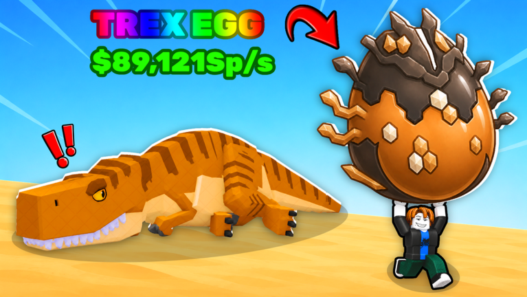
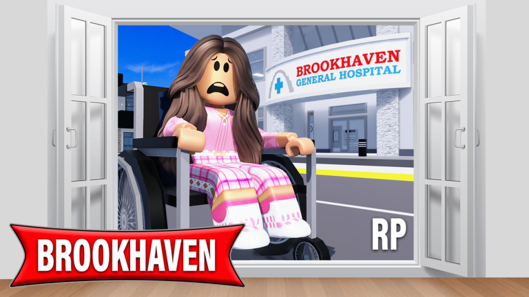

로블록스 인기 체험 5종 정리 지금 동시 접속자 순위 비교표 2026년 10월
8월에 로블록스 여름방학 체험을 정리하고 두 달쯤 지나 순위판을 다시 열어봤는데요, 맨 위 얼굴이 통째로 바뀌어 있더라고요. 그래서 오늘은 2026년 10월 16일 기준으로 지금 가장 많은 사람이 동시에 들어가 있는 체험 5개를 표 하나로 묶고, 처음 시작한다면 어디부터 열면 좋을지 고르는 기준까지 정리해 볼게요.
기준은 현재 동시 접속자 수예요. Brookhaven RP만 로블록스 공식 API로는 값이 읽히지 않아서 통계 사이트(RoTrends·RoWatcher)의 수치를 썼거든요. 전 세계 합산이라 국내 순위와는 다를 수 있고, 숫자는 실시간이라 모두 10월 16일 확인 값이에요. 참고로 로블록스는 개별 게임을 '체험'이라고 부르니 이 글도 그 말을 따를게요.
로블록스 인기 체험 5종, 한눈에 비교해 봤어요
10월 16일 기준 동시 접속자가 가장 많은 체험은 Steal An Egg이고, Brookhaven RP, Adopt Me!, Break and Steal an Egg, Blox Fruits 순으로 이어져요.
| 순위 | 체험 | 동시 접속(10/16) | 제작(그룹) | 플레이 방식 | 서버 최대 | 추천 비율(10/16) |
|---|---|---|---|---|---|---|
| 1 | Steal An Egg | 약 110만 | and Collect Rare Pets | 알 훔치기·펫 수집 | 7명 | 약 92% |
| 2 | Brookhaven RP | 약 24만(통계 사이트) | Brookhaven by Voldex | 집·차량 역할놀이 | — | 약 86% |
| 3 | Adopt Me! | 약 22만 | Uplift Games | 펫 입양·집 꾸미기 | 35명 | 약 86% |
| 4 | Break and Steal an Egg | 약 18만 | ILGames x Eggs | 알 깨기 타이쿤 | 7명 | 약 97.7% |
| 5 | Blox Fruits | 약 14만 | Gamer Robot Inc | 검사·열매 액션 RPG | 12명 | 약 92% |
제작 칸은 체험을 만든 그룹 표기라서 Steal An Egg의 'and Collect Rare Pets'도 사람 이름이 아니라 그룹 정식명이에요. Brookhaven RP의 24만은 공식 API가 못 주는 값이라 통계 사이트 기준이고, 나머지는 공식 API 값이에요.
1위와 2위가 네 배 넘게 벌어져 있는 것도 놀라운데, 그 1위가 7월 말에 생긴 신생 체험이라는 점이 더 눈에 띄네요. 10월 16일 확인 기준 누적 방문 수는 Blox Fruits가 약 650억 회, Adopt Me!가 약 451억 회인데 Steal An Egg는 석 달이 채 안 되는 사이에 약 82억 회를 쌓았어요.
Steal An Egg 1위, 알을 훔쳐 펫을 모으는 체험
Steal An Egg는 2026년 7월 25일에 만들어진 체험으로, 알을 훔쳐 부화시켜 희귀 펫을 모으고 그 펫이 벌어 오는 돈으로 기지를 키우는 수집형이에요. 공식 설명을 따라가 보면 돈이 쌓이면 트레드밀과 기지를 올리고, 속도를 훈련해서 결국 다른 플레이어의 것까지 훔치는 흐름이에요. 한 서버에 최대 7명이라 작은 방에서 서로 부딪히는 구조인데, 처음엔 알 부화와 펫 모으기부터 익히고 속도 훈련은 그다음에 챙기는 순서가 자연스러워요.

알과 펫이 한가득, 1위 체험의 공식 화면이에요.
이미지: 로블록스 공식 Steal An Egg 체험 페이지
한국 시간으로 8월 25일 오전에 약 3~4시간 내려갔다 돌아온 일이 있었는데(2차 보도의 UTC 시각을 한국 시간으로 옮긴 추정이에요), 로블록스가 사유를 밝히지 않은 가운데 짧은 영상을 넘겨 보며 보상을 받는 기능 때문이라는 추정이 나왔고 복귀하면서 그 기능이 빠졌다고 전해져요. 개발진이 확인한 내용은 아니고, 같은 시기 나온 보상형 미디어 피드 제한 정책이 이 체험을 겨냥했다는 공식 언급도 없어요.
Brookhaven RP 2위, 집과 차로 노는 역할놀이
Brookhaven RP는 2020년에 나온 역할놀이 체험으로, 집을 사고 차를 몰고 직업을 고르며 마을에서 하루를 보내는 놀이가 중심이에요. 2025년 2월에 제작사 Voldex가 원작자 Wolfpaq에게서 인수한다고 발표했고, 제작 그룹 표기도 Brookhaven by Voldex로 바뀌어 있어요. 정해진 코스가 있는 체험이 아니라 처음이라면 집, 차량, 직업 중에 끌리는 하나만 잡고 마을을 한 바퀴 돌아보는 걸 추천드려요.

병원 앞 거리에서 휠체어에 탄 캐릭터가 놀라는 장면이 실린 공식 썸네일이에요.
이미지: 로블록스 공식 Brookhaven RP 체험 페이지 (로그인 후 표시될 수 있어요)
Adopt Me! 3위, 펫 키우고 집 꾸미는 오래된 인기작
Adopt Me!는 2017년 7월 14일에 생긴 체험으로, 펫을 입양해 키우고 수집품을 거래하고 집을 꾸미는 게 핵심이에요. 제작사는 Uplift Games이고 5종 중 가장 오래된 9년 넘은 체험이에요. 한 서버에 최대 35명까지 들어가며, 공식 설명에는 지금 할로윈 이벤트가 진행 중이라고 적혀 있어요. 공식 타이틀 앞에 [12H⏳] 같은 표시가 붙어 있는데, 이 글에서는 간단히 Adopt Me!로 부를게요. 처음에는 펫 한 마리를 입양해 키워 보고 집을 꾸며 보는 것부터 시작해 보시는 걸 추천드려요.
할로윈 이벤트 중인 화면이에요.
체험마다 연령 표시와 결제 상품이 따로 붙어 있어서, 시작 전에는 각 공식 체험 페이지에서 이 부분을 확인해 보시는 걸 추천드려요.
Break and Steal an Egg 4위, 경비를 피해 훔치는 알 깨기 타이쿤
Break and Steal an Egg는 2026년 9월 초에 만들어진 알 깨기 타이쿤으로, 공식 설명에 Steal An Egg에서 영감을 받았다고 직접 적혀 있어요. 제작은 ILGames x Eggs이고, 부화한 동물을 경비를 피해 훔쳐서 기지에 두면 현금이 들어오는 구조예요. 속도와 곡괭이를 업그레이드하고 도감을 채우는 재미도 있으며 서버는 최대 7명이에요. 10월 16일 확인 기준 추천 비율이 약 97.7%로 5종 중 가장 높은데, 만들어진 지 한 달 남짓이라 순위가 크게 흔들릴 수 있죠.
알을 깨고 훔치는 타이쿤, 4위에 오른 신생 체험이에요.
이미지: 로블록스 공식 Break and Steal an Egg 체험 페이지
Blox Fruits 5위, 검사와 열매 능력으로 키우는 액션 RPG
Blox Fruits는 2019년 1월 16일에 만들어진 Gamer Robot Inc의 액션 RPG로, 검사나 열매 능력자로 성장하며 적과 보스를 쓰러뜨리고 바다를 항해하는 체험이에요. 공식 설명 기준 레벨 상한은 3000이고 서버는 최대 12명이며, 가장 최근 업데이트는 10월 11일이에요. 처음에는 검사로 갈지 열매로 갈지 방향부터 정하고 적을 잡으며 레벨을 올려 보시는 걸 추천드려요. 8월 글에서 한 번 다룬 체험이라 이번에는 최근 업데이트와 규모 위주로만 짚었어요. 공식 설명이 익스플로잇을 금지한다고 경고하잖아요, 비공식 프로그램은 쓰지 않는 게 안전해요.
바다와 전투가 중심인 5위 체험이에요.
이미지: 로블록스 공식 Blox Fruits 체험 페이지
처음이라면 어떤 체험부터 열까, 고르는 기준
처음 고르는 기준은 이 체험에서 무엇을 하며 놀고 싶은지 하나예요.
- 느긋하게 꾸미고 역할놀이 — Brookhaven RP, Adopt Me!
- 모으고 키우는 성장 루프 — Steal An Egg, Break and Steal an Egg
- 전투와 모험 — Blox Fruits
알 훔치기 두 개는 결이 비슷하니, 접속자가 압도적으로 많은 쪽이 끌리면 Steal An Egg를, 호평 비율부터 보고 싶다면 Break and Steal an Egg를 먼저 보시는 걸 추천드려요. 함께 노는 사람 수도 기준이 될 수 있는데요, 서버 최대 인원이 Adopt Me!는 35명, Blox Fruits는 12명, 알 훔치기 두 개는 7명이에요. 큰 서버에서 북적이는 쪽이 좋으면 Adopt Me!를, 소규모가 편하면 알 훔치기 두 개나 Blox Fruits를 보시면 돼요.
자주 묻는 질문
Q. 8월 글과 비교하면 순위가 많이 바뀌었나요?
8월 글에서 소개한 6종 가운데 이번 상위 5개에 남은 건 Blox Fruits 하나뿐이에요. BedWars와 Grow a Garden 2는 5위 밖으로 밀렸답니다.
Q. 접속자가 많으면 처음 하기에도 쉬운 체험인가요?
접속자 수는 인기를 보여 줄 뿐 난이도나 연령 적합도까지 알려 주지는 않아요. 같은 5위권 안에서도 역할놀이와 전투 RPG는 놀이 결이 전혀 다르거든요.
Q. 동시 접속자 수와 누적 방문 수는 뭐가 다른가요?
동시 접속자는 지금 이 순간 체험 안에 들어가 있는 사람 수라서 시간대에 따라 계속 오르내리고, 누적 방문 수는 지금까지 쌓인 입장 횟수예요.
Q. 아이가 한다면 보호자 설정은 어디서 챙기나요?
지출 한도와 채팅, 스크린타임 같은 보호자 설정은 8월에 쓴 글에 따로 정리해 뒀어요. 아래 같이 보기 좋은 내용에 링크를 달아 뒀답니다.
로블록스 인기 체험 5종 정리
1위가 석 달도 안 된 신생 체험이라 한 달 뒤엔 판이 또 바뀔 수 있어요. 그때 다시 정리해서 들고 올게요.
참고한 곳
· 로블록스 공식 API — 체험 정보(2026.10.16 기준)
· 로블록스 공식 API — 추천·비추천(2026.10.16 기준)
· RoTrends 인기 체험 순위 (통계 사이트·2차, Brookhaven RP 동시 접속 수치)
· RoWatcher (통계 사이트·2차, 순위 비교용)
· Voldex의 Brookhaven 인수 발표 보도자료 (businesswire)
· Steal An Egg 중단·복귀 보도 (allthings.how·2차)
· 로블록스 공식 Blox Fruits 체험 페이지
✔ 로블록스 같이 보기 좋은 내용
· 로블록스 게임 여름방학 인기 이유 아이랑 할만한 체험 총정리